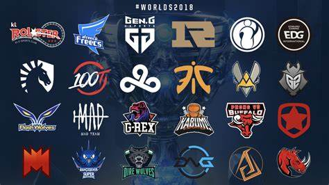
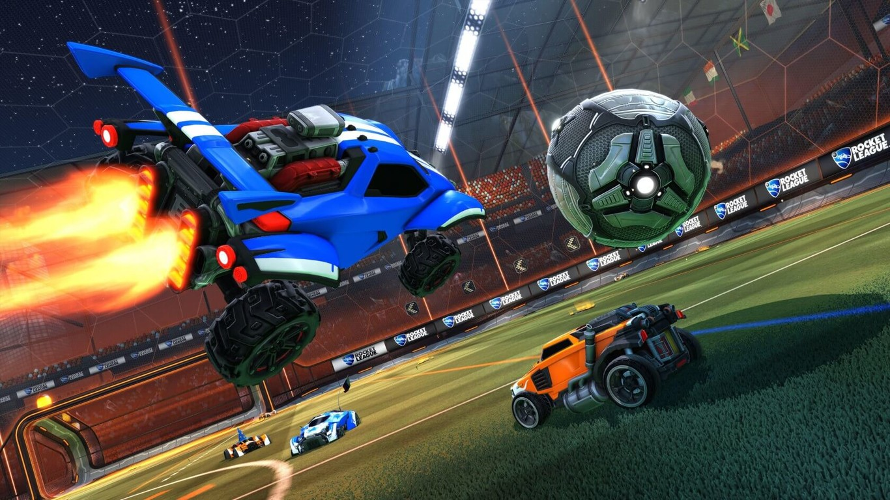
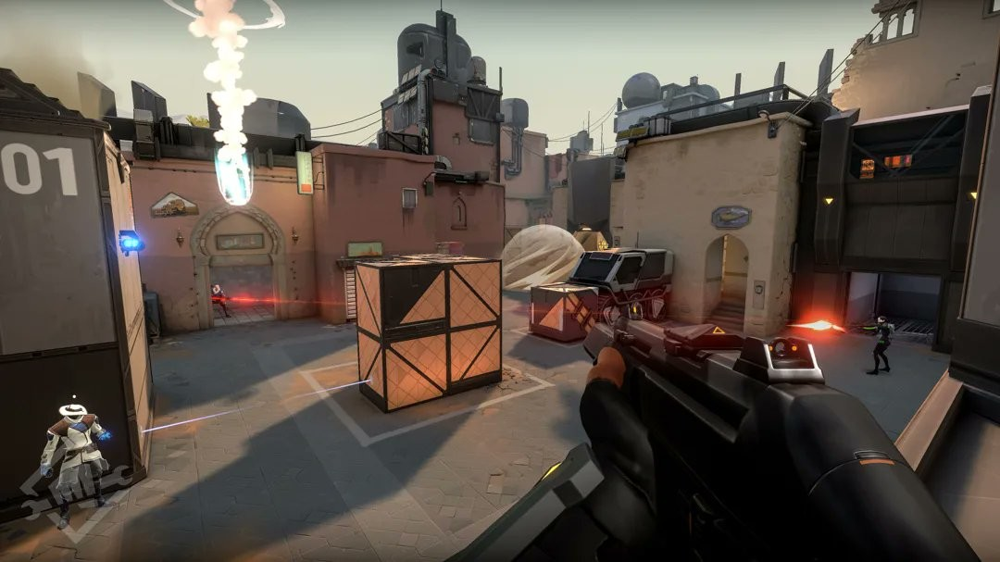
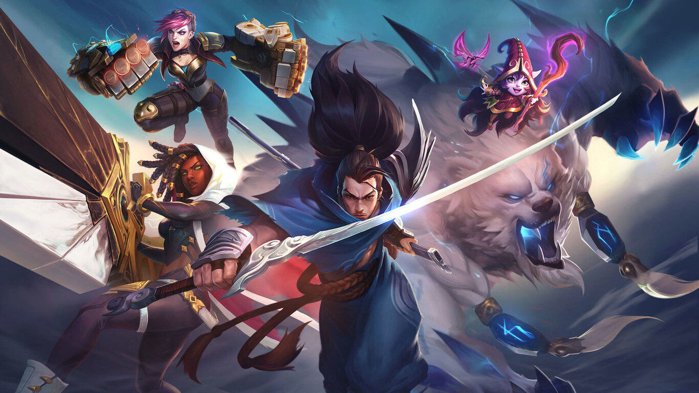

Mi opinion sobre el competitivo
Para mi el competitivo es algo tan simple como complejo, ya que todos le hemos echado horas a un videojuego,
pero el competitivo es algo de otro nivel que pocas personas llegan a perfeccionar, tanto así que ya hay innumerables cantidades de jugadores intentando llegar a su máximo nivel.
Los juegos competitivos del momento
No cabe duda de que el competitivo de muchos juegos esta llegando a muy altos niveles, y esto se nota ya que es algo muy sonado a nivel mundial, en juegos como:
No cabe duda de que este mundo se está expandiendo al mundo profesional(los llamados E-Sports);
Existen varios equipos en los diferentes juegos ya mencionados, que compiten en torneos por recompensas y reconocimiento.
Y estes son los videojuegos más competitivos:
Counter Strike:

Rocket League:

Valorant:

League of Legends:
